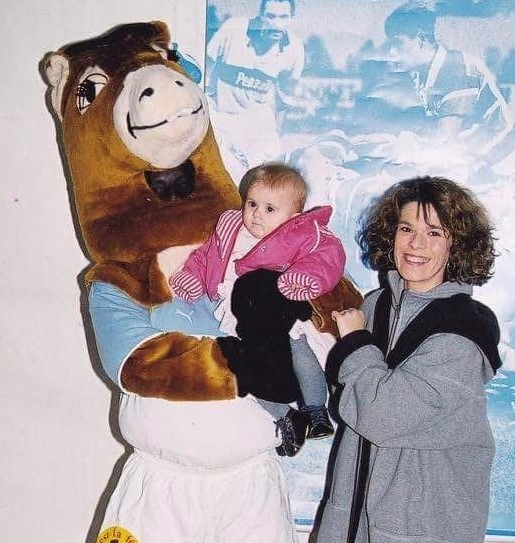
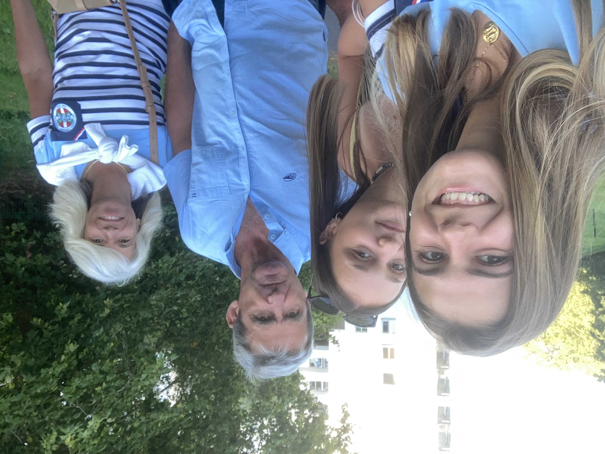
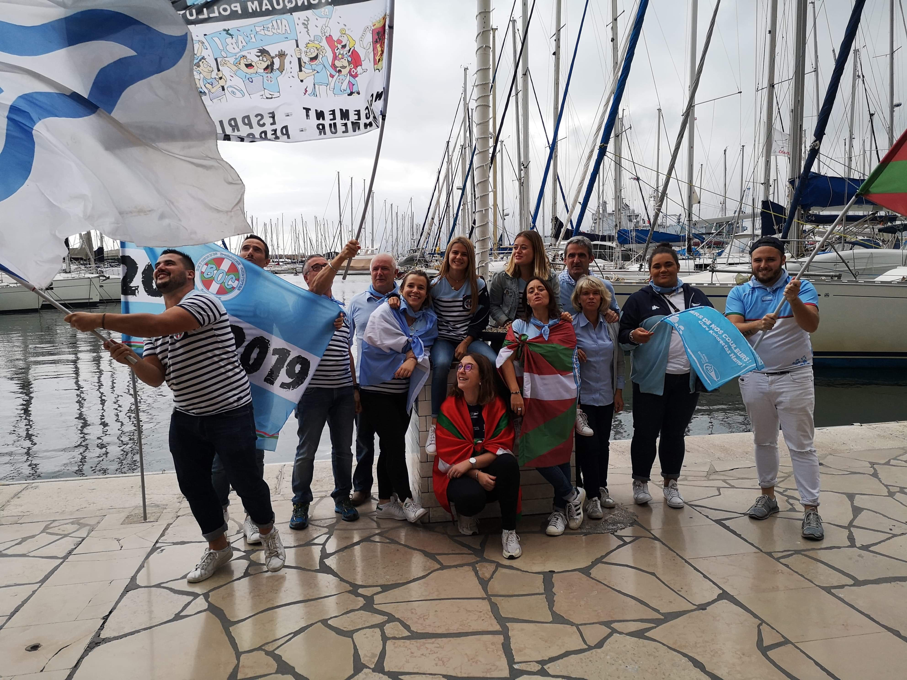

Ma passion depuis Toujours
Le Rugby
Le Rugby : Sport pratiqué avec un ballon ovale, opposant deux équipes de quinze ou treize ou même à sept joueurs, chacune cherchant à marquer plus de points que l'autre en portant le ballon dans l'en-but de l'adversaire ou en le faisant passer, d'un coup de pied, au-dessus de la barre des poteaux!
Découvrir la Fédération France de Rugby

Le commencement
Le rugby et moi est une histoire de famille depuis mon enfance. Mes parents étant passionnés de ce sport, ils m’ont tout de suite transmis leur passion. Très tôt j’ai assisté à mes premiers matchs avec eux, mon grand-père ainsi que ma sœur. J’ai tout de suite adhéré à ce sport, faut l’avouer qu’au début j’y assistais seulement pour voir la mascotte, Pottoka !
Des moments de partage
Ce sport qui nous rassemble et qui nous permet de partager les mêmes valeurs : respect, solidarité et convivialité. Me retrouver aux abords d’un terrain de rugby pour encourager mon équipe est pour moi un grand moment de plaisir partagé. Cette passion m'aura permis de rencontrer pleins de monde. Aujourd'hui membre d’une association de supporters bayonnais et élue au Conseil d’Administration, je participe activement à l’organisation des animations au stade. Ce qui me permet de rencontrer à chaque match de nouvelles personnes et de tisser dees liens tout en partageant toujours ce moment avec ma famille.


